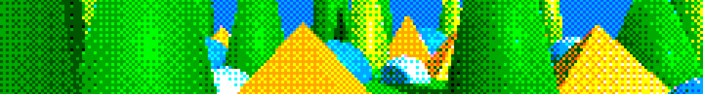

Gamelogic Fx Dithering
Version 6.1.0

Gamelogic Fx Dithering provides a collection of shaders for producing dithering effects in Unity. Dithering is useful for simulating smooth gradients, transparent transitions, or stylized rendering with a limited number of colors.
In the past dithering was a way to get more color depth out of limited displays, but in modern games it is often used as a stylistic choice.
Dithering works by applying a bias to the image before quantizing it. The way the bias is supplied differentiates the three techniques shipping with this package:
Matrix bias: A fixed pattern given as a matrix is applied to the image. The matrix is normalized, and repeated as necessary to cover the entire image. This is the most common form of dithering, and is used in many classic games. It includes Bayer dithering.
Texture bias: A texture is used to supply the bias. This allows for more complex patterns, and can be used to create effects such as noise dithering and halftone dithering. Any dithering scheme can be encoded in a texture; however, sampling and anti-aliasing, can make differences in how the technique looks.
Grid bias: This advanced dithering technique extends matrix bias. It too uses a matrix, but the tiling can be more complex. It also supports hex grid patterns, which are unusual but very pleasant. For square pixels the technique allows more efficient representation of some patterns.
Samples
The package includes a sample scene demonstrating the various dithering effects and their settings. See How to import samples for instructions on how to import the sample scene into your project.
Important
Make sure you open the scene in the folder that corresponds to the rendering pipeline you are using.
For Built-in:
Assets/Samples/[Package]/[Version]/[Package Samples Root]/[Sample]/BuiltIn/
For URP:
Assets/Samples/[Package]/[Version]/[Package Samples Root]/[Sample]/URP/
Quick Start
Built-in Render Pipeline
- Select your camera in the Hierarchy.
- Click Add Component and search for the effect (e.g. Dither Matrix Bias).
- The effect is active immediately — adjust properties in the Inspector.
- For Dither Matrix Bias and Dither Grid Bias, click Open Designer in the Inspector to design the pattern interactively with a live preview.
See How to use post effects for a full walkthrough.
Universal Render Pipeline (URP)
- Open your URP Renderer asset.
- In the Renderer Features list, click Add Renderer Feature and search for the effect.
- Expand the feature to adjust its properties.
- For Dither Matrix Bias and Dither Grid Bias, click Open Designer to design the pattern interactively with a live preview.
See How to use post effects for a full walkthrough.
Included Shaders
Post-effect shaders
Create full-screen dithering using the Built-in Render Pipeline or URP.
- 📘 How to use post effects.
- 📘 How to use map renderers.
- Dithering Post Effects Reference for details on each effect.
- Dithering Tips for best practices and recommendations.
Object shaders
Apply dithering directly to materials for alpha dithering.
- 📘 How to use object shaders.
- Dithering Object Shaders Reference for details on each shader.
Editor Tools
Interactive tools for designing dithering patterns and generating textures.
- Dither Pattern Designer — interactively design the matrices used by the Dither Matrix Bias effect, with a live preview.
- Dither Grid Bias Designer — interactively design the hex or rectangular grid bias matrices used by the Dither Grid Bias effect, with a live preview.
- Dither Matrix Bias Texture Generator — bake dither matrices (greyscale or RGB) to a texture suitable for the Dither Texture Bias effect.
- Dither Grid Bias Texture Generator — bake a grid bias pattern (hex or rectangular) to a texture suitable for the Dither Texture Bias effect.
Pipeline Support
This package supports both:
- Built-in Render Pipeline
- Universal Render Pipeline (URP)
Most settings are identical in both pipelines. Differences are documented in the 📘 How-to guides.
Additional Tools Included (Gamelogic Fx)
The package also ships with Gamelogic Fx, which provides reusable utilities for effect development:
- Texture Generation Tools: generate gradients, noise, patterns, LUTs, and more.
- Post Effect Framework: lightweight base classes for building custom post effects.
- Common Shaders: shared building blocks used across effects.
- Common Map Renderers: for rendering procedural maps.